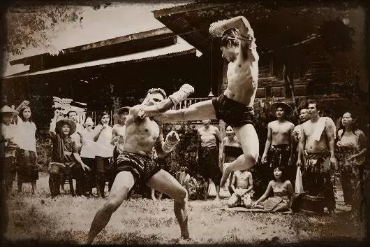
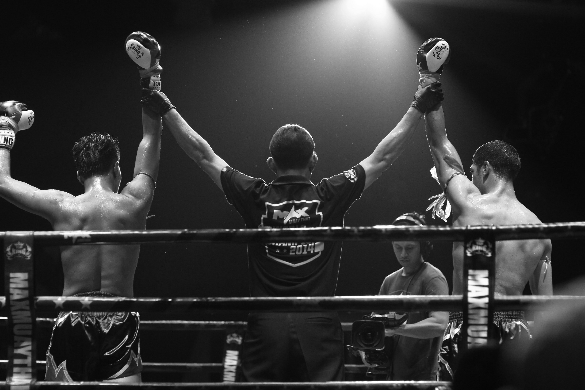
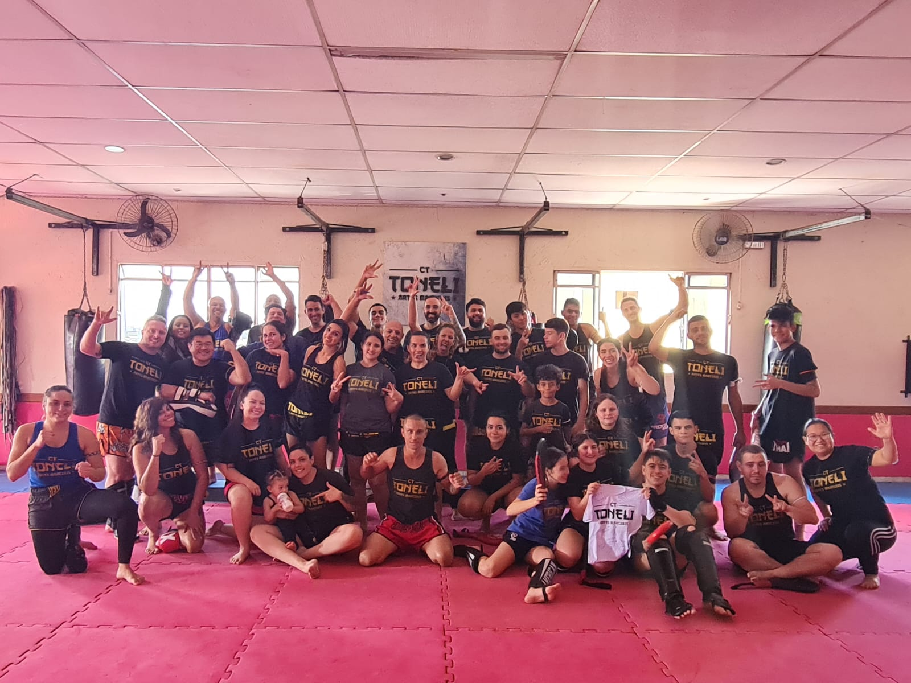

O Muay Thai, ou boxe tailandês, é uma arte marcial originária da Tailândia, com raízes que remontam ao século XIII. Inicialmente desenvolvido como uma técnica de combate para o exército siamês, foi usado em guerras contra invasores e se tornou essencial para a defesa nacional.
Durante o período de Ayutthaya (1350-1767), o Muay Thai ganhou popularidade tanto entre a população comum quanto entre a realeza. O esporte foi promovido por reis como Naresuan e Prachao Sua, que acreditavam que guerreiros habilidosos seriam bons líderes. Nessa época, foram introduzidos equipamentos tradicionais como o mongkon (faixa de cabeça) e o pa-pra-jiat (braçadeira), além de ringues delimitados por cordas no chão.
No século XX, o Muay Thai começou a se internacionalizar, com lutadores tailandeses competindo e vencendo em torneios mundiais. A eficácia da arte marcial tornou-se amplamente reconhecida, contribuindo para sua popularidade global. Hoje, o Muay Thai é praticado em todo o mundo, tanto como esporte competitivo quanto como uma forma de exercício físico e defesa pessoal.
O Muay Thai oferece uma série de benefícios para a saúde física, mental e social. Além disso, as lutas desempenham um papel fundamental na desconstrução de estereótipos, pois são constantemente associadas de forma errônea à violência e à agressividade. No entanto, seu propósito vai muito além disso, promovendo a inclusão e a construção de novos vínculos pessoais. Sua prática regular e constante promove disciplina, coragem e autoconfiança, além disso na parte física e estética, os treinamentos desenvolvem massa muscular, melhoram a capacidade respiratória e ajuda na perda de gordura corporal.
A decisão entre se inscrever em uma academia tradicional ou em uma escola de artes marciais é uma escolha pessoal e significativa, que pode o impactar sua saúde física e mental de formas distintas. Ambas as opções oferecem benefícios únicos, mas há razões mais convincentes pelo o qual você deveria considerar optar pela a arte do Muay Thai.
Começando agora, e procurando por dicas de Muay Thai ou precisando de ajuda? Visite nosso blog para dicas, treinamentos e inspiração para iniciantes!
(11) 94213-9468
matheus.makiyama@sptech.school